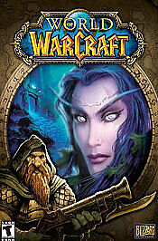
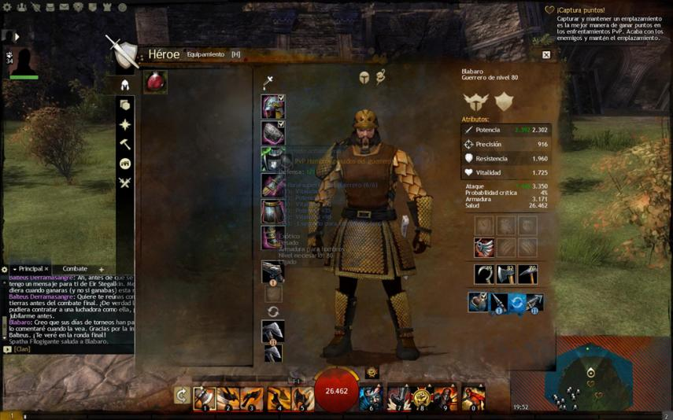
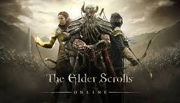
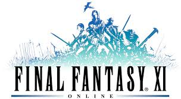

Los Mejores Juegos de MMORPG

World of Warcraft
World of Warcraft es un videojuego desarrollado por Blizzard Entertainment que se puso a la venta en Europa el 11 de febrero de 2005. Se trata de un videojuego multijugador masivo en línea que ha cautivado a millones de seguidores, y que durante años ha estado al pie del cañón gracias a sus actualizaciones y expansiones, conformando una de las comunidades más grandes del sector del videojuego. World of Warcraft es un MMORPG que requiere una cuota mensual para poder explorar las tierras de Azeroth. El juego sigue la línea de otros títulos del género. El jugador se crea un avatar seleccionable de entre diferentes clases y razas, que le representará en el mundo abierto..
Guild Wars 2
es un MMORPG que nos adentra en el mundo de Tyria para vivir una increíble aventura donde nos esperan un sinfín de peligros. La esencia de la saga, que comenzó con el éxito de Guild Wars, pasaba por no pagar cuotas en una época donde todos los títulos de esta clase cobraban por jugar una media de 9-12 euros al mes. Bien es cierto que hoy en día existen infinidad de títulos Free to Play donde jugamos sin pagar, pero no menos cierto es que Guild Wars 2 los supera con creces.

The Elder Scrolls Online
The Elder Scrolls Online (abreviado comúnmente como TESO) es un videojuego de rol multijugador masivo en línea en desarrollo por ZeniMax Online Studios y editado y distribuido por Bethesda Softworks. Forma parte de la serie The Elder Scrolls, siendo planteado como una precuela, ambientándose mil años antes de los acontecimientos ocurridos en la quinta entrega. Fue lanzado al mercado el 4 de abril de 2014 para Microsoft Windows y MacOS, y el 9 de junio de 2015 para Xbox One y Playstation 4 ,en inglés, francés y alemán.

Final Fantasy XI
Han pasado ya ocho años desde que Square Enix lanzó en Japón Final Fantasy XI, su primera incursión en el género de los MMORPG, aunque en Europa debimos esperar hasta septiembre de 2004 para disfrutar de un juego que el público asiático había acogido con enorme entusiasmo. Estamos a finales de 2010 y el ciclo parece cumplido. Es el momento de dar el salto y adentrarse en el mundo de Eorzea, donde por cierto, en HobbyNews llevamos ya algunos días dando guerra.